On March 8, 2023, the Hantian Mountain Border Police Post of the Hongkazi Border Police Station, Yili Border Management Detachment, Xinjiang, formed a horseback patrol team of officers and auxiliary police. They patrolled the border line at an altitude of more than 2,800 meters on horseback. They focused on mountain passes and key roads, forward areas, and uninhabited zones. They carefully checked for all kinds of risks. They built a strong border safety line to keep the border safe and stable.
(Reporters: Wang Pengfei, Zheng Mingming)
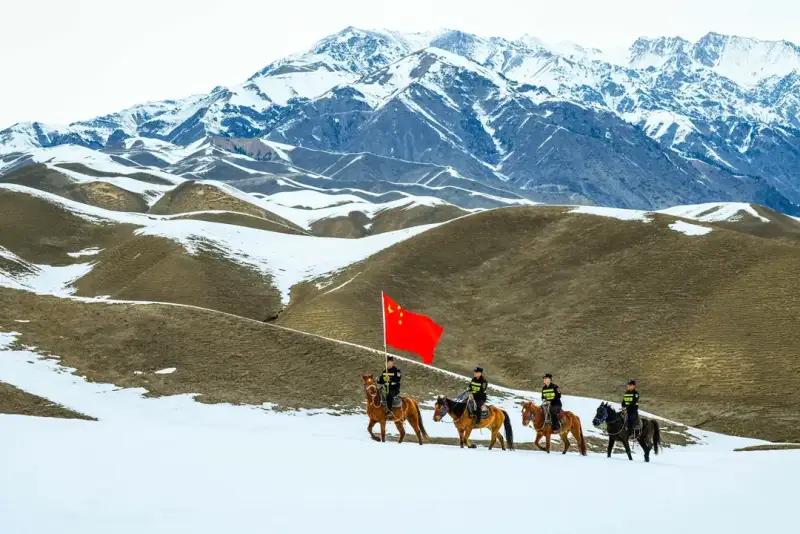
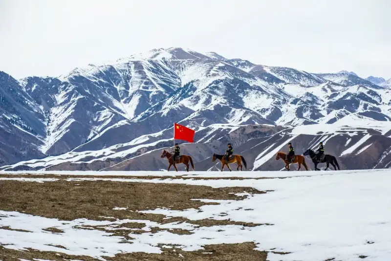
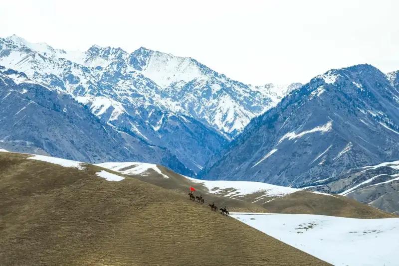
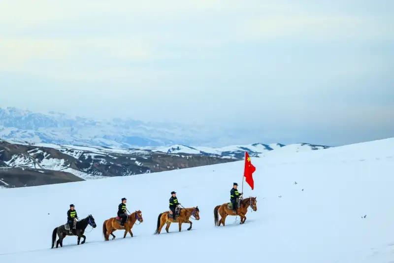
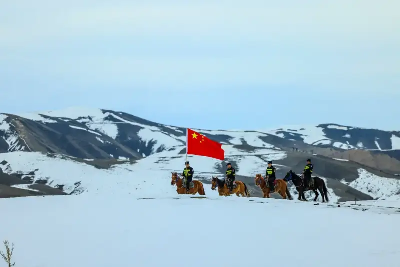
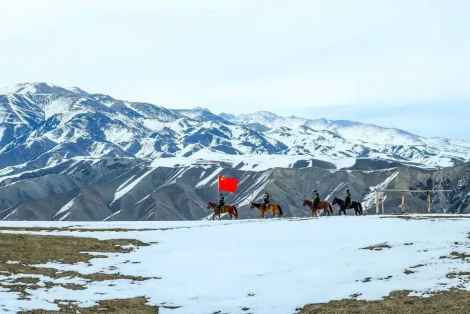
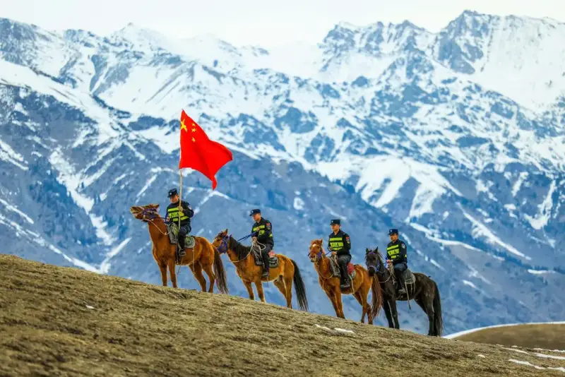
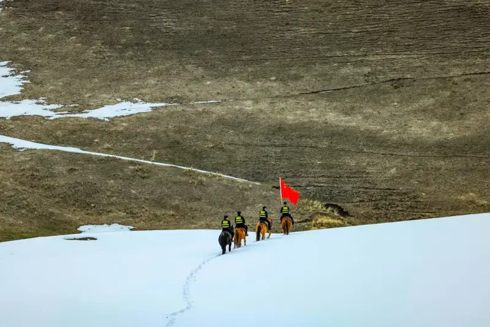
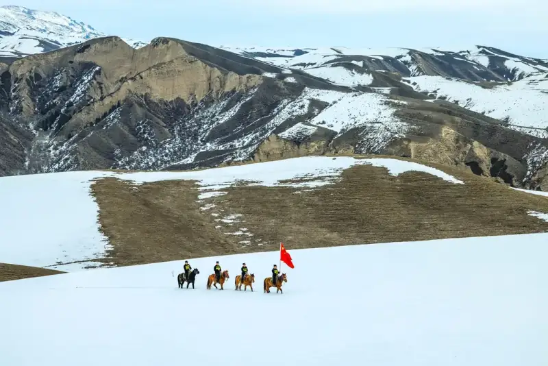
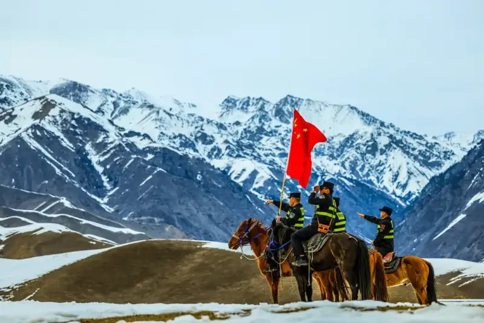
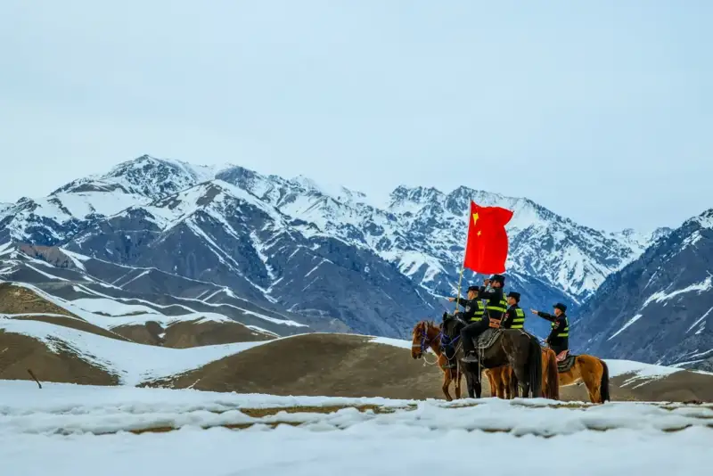